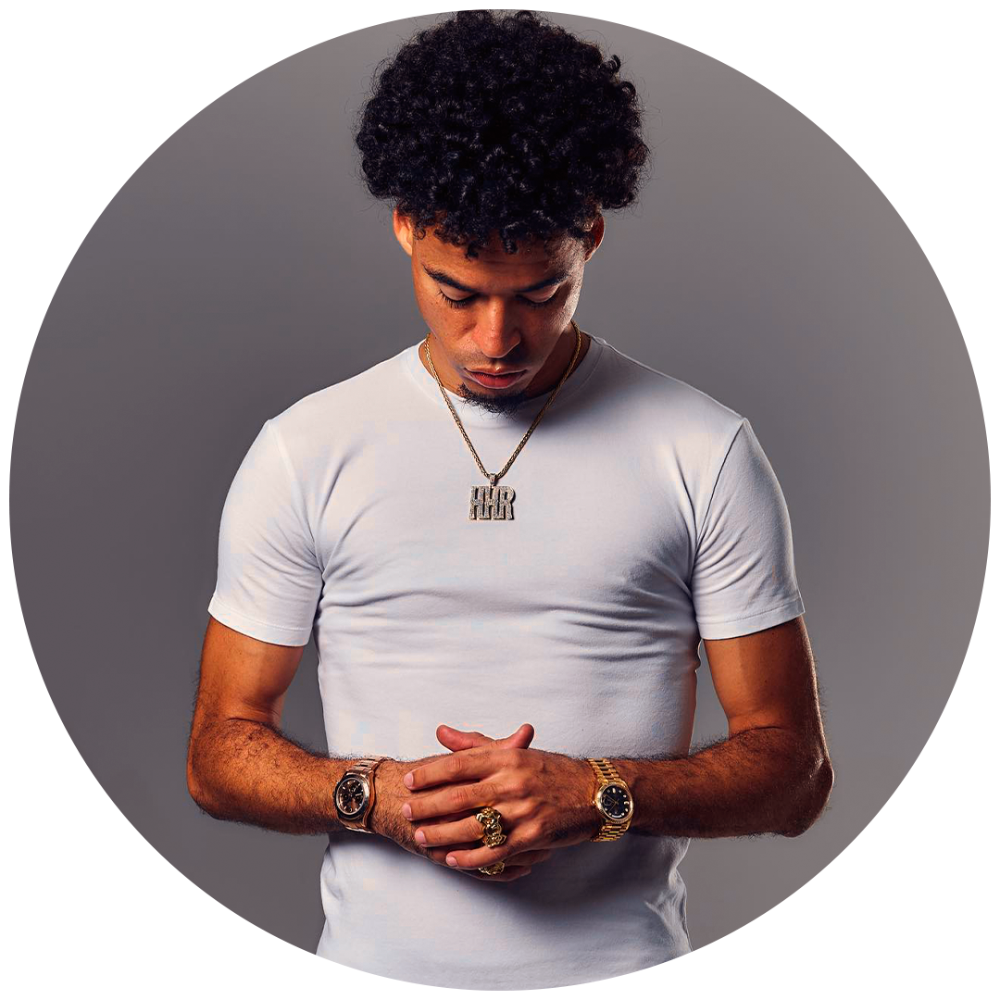

Informação geral
Nome completo: Lennon dos Santos Barbosa Frassetti
Nascimento: 30 de março de 1994 (29anos)
Naturalidade: Rio de Janeiro, RJ
Gêneros: Hip hop, Rap, Trap
Gravadora: Warner Music Brasil

Criado no bairro carioca de Realengo, L7nnon ganhou destaque após lançar Hip Hop Rare (2020), seu segundo álbum de estúdio pela Warner Music Brasil, que lhe permitiu se apresentar no MTV Millennial Award, onde foi premiado com um prêmio. No ano seguinte, teve seus primeiros resultados comerciais, colocando duas músicas no ranking anual dos maiores sucessos do Brasil, segundo dados da Pro-Música Brasil. A PMB concedeu a certificação de diamante que denota trezentas mil unidades de venda à "Corte Americano", uma colaboração gravada em conjunto com Filipe Ret e produzida por Chris Beats ZN.
Em março de 2022, participou pela primeira vez do Lollapalooza Brasil onde, durante o show de Jack Harlow, interpretou "Freio da Blazer". "Desenrola, Bate, Joga de Ladin", lançado no mês seguinte, se tornou um hit entre os dez primeiros nas paradas Billboard Brazil Songs e Spotify Brazil e em Portugal, e uma entrada na parada paraguaia.
Em 2023, L7nnon anunciou a criação da sua própria gravadora, chamada “Hip Hop Rare” que tem como objetivo, impulsionar a carreira de novos talentos da cena do Rap Nacional e ajudá-los a alcançar o grande público.